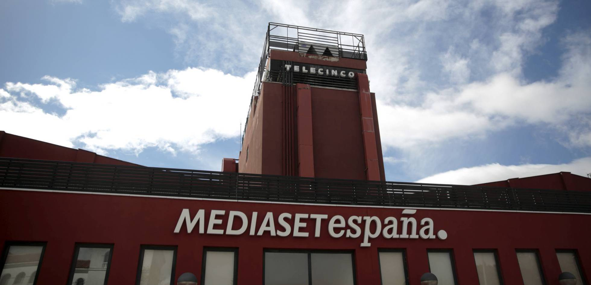
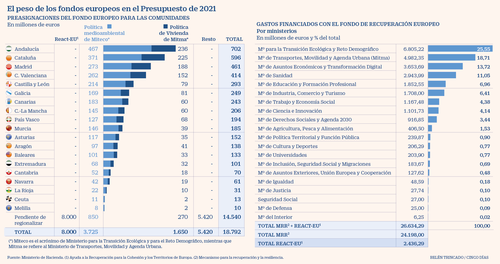

Aena puntualiza las previsiones del Gobierno para 2020 y 2021
Aena considera que las estimaciones económico-financieras proporcionadas por el Gobierno en el proyecto de Ley de Presupuestos Generales del Estado “no se corresponden con la actual previsión de cierre del ejercicio 2020”, según ha explicado en un hecho relevante remitido a la Comisión Nacional del Mercado de Valores. La compañía explica que estas cifras se ven afectadas por "la rápida evolución de los efectos derivados de la pandemia de la Covid-19 que ha tenido lugar desde que se elaboraron dichas previsiones". A ello se suman los cambios en las expectativas sobre el cierre de acuerdos con los operadores de las actividades comerciales en los aeropuertos que, hasta la fecha, no se han materializado y, como resultado de ello, en el tratamiento contable de los ingresos por rentas mínimas garantizadas asociadas a dichos contratos. Además, el operador aeroportuario ha subrayado que en lo referente a las cifras publicadas por el Ejecutivo para 2021, la compañía carece de una “estimación de tráfico de referencia, dada la gran incertidumbre” sobre cómo evolucionará este en los próximos meses y “la enorme amplitud del rango de estimaciones publicadas al respecto por los diferentes organismos internacionales ligados al sector”. El proyecto de presupuestos presentado este miércoles por el Gobierno en el Congreso de los Diputados prevé que Aena pierda este año 581,6 millones de euros, para el siguiente pasar a ganar 68,2 millones, un cálculo que la propia entidad advierte de que está desfasado por el rápido avance de la pandemia. Para el próximo año, y siempre de acuerdo a las cifras reflejadas en el proyecto del Presupuesto General del Estado (PGE) para 2021, el operador de aeropuertos español tendrá una cifra de negocio neta de 2.649 millones, frente a 1.640 previstos para el cierre de 2020, lo que supone un aumento del 61,5%. El resultado de explotación previsto se sitúa en 141,6 millones de euros, frente a 726,7 millones de pérdidas esperadas para este 2020 como consecuencia de la abrupta caída del tráfico aéreo por la extensión de la pandemia. Los gastos de personal sumarán en 2021 un total de 470,2 millones, un 2% sobre los previstos en este 2020.
Mediaset reduce el beneficio un 34% hasta septiembre, aunque sube un 12% en el tercer trimestre
Mediaset España ha obtenido un beneficio neto de 103,2 millones de euros durante los nueve primeros meses de 2020, lo que supone 53,8 millones menos que en el mismo periodo del año anterior, según ha informado este miércoles la compañía. En este sentido, el grupo de comunicación ha destacado que este beneficio neto supone un margen sobre ingresos netos del 18,9% y un beneficio por acción de 0,33 euros. Asimismo, la compañía ha alcanzado una facturación neta de 546,6 millones de euros hasta septiembre y ha destacado el incremento del 72,8% en 'Otros ingresos' hasta 76,4 millones, frente a los 44,2 millones logrados en el mismo periodo de 2019. En esta partida se contabiliza la venta de contenidos a terceros de la distribuidora Mediterráneo Mediaset España Group, que ha aportado 33,5 millones, un 280,9% más que la cifra registrada entre enero y septiembre de 2019. Con respecto a los ingresos brutos por publicidad, ha detallado que se han situado en 488,3 millones de euros, de los que 478,9 corresponden a la explotación de medios propios. Los ingresos netos por publicidad, por su parte, han sido de 470,2 millones. Por otro lado, la compañía ha reducido sus costes totales un 13,2% hasta 396,6 millones de euros, obteniendo como resultado bruto de explotación ajustado (Ebitda) de 150,1 millones, con un margen sobre ingresos totales del 27,5%, y un beneficio operativo (Ebit) de 132,9 millones, con un margen sobre ingresos totales del 24,3%. Además, Mediaset España ha apuntado que ha llevado a cabo entre enero y septiembre "una fuerte generación de caja, lo que le ha permitido cerrar el periodo con una posición financiera neta positiva" de 25,1 millones, frente a los 30,2 millones de deuda al cierre de 2019, a pesar de la adquisición del 4,25% del capital de ProSieben Sat1. La compañía ha generado hasta septiembre un 'free cash flow' operativo de 119,8 millones.

Andalucía, Cataluña y Madrid recibirán la mayoría del dinero europeo
Estas cantidades, no obstante, serán mucho más elevadas, porque obedecen al reparto preliminar de 4.252 millones de euros de un total de 18.792 millones provenientes del MRR y el React-EU, dos palancas del fondo de recuperación. Quedan por asignar, por ello, más de 14.500 millones de euros "pendientes de regionalizar" que tendrán que repartirse entre los diferentes gobiernos. Por partes. De los 26.634 millones de euros del fondo de recuperación europeo que España recibirá en 2021, unos 10.800 millones se transferirán a las comunidades autónomas y 1.489 millones a las entidades locales para que aborden las actuaciones que correspondan de acuerdo con su ámbito competencial. Por todo ello, detalla el libro amarillo presentado este miércoles por la ministra de Hacienda, María Jesus Montero, y debido a la horizontalidad de la canalización, son clave para la correcta implementación de los Presupuestos Generales del Estado "los sistemas de cogobernanza, coordinación y buena fe institucional". Para visualizar la foto completa del peso de los gobiernos autonómicos en las cuentas públicas, recuerda el documento, es preciso recordar que en 2021 el Ejecutivo destinará a las autonomías otros 8.000 millones del React-UE, otra de las palancas del fondo de recuperación que no aparece en el proyecto de PGE por integrarse directamente en los presupuestos autonómicos. Por lo tanto, en 2021 las Administraciones Públicas españolas (incluyendo al Estado) presupuestarán un total de 34.634 millones de fondos de recuperación, de los que 18.793 millones serán gestionados por las regiones, lo que representa el 54% del total de fondos. "Si contamos, además, los 1.483 millones de euros que gestionarán las entidades locales, las Administraciones territoriales en su conjunto se harán cargo del 58% del total de fondos de recuperación de 2021", recalca el texto. De esos 18.793 millones de fondos que recibirán las autonomías ya están preasignados de forma estimativa 2.873 millones de políticas medioambientales del Ministerio de Transición Ecológica y 1.380 millones de políticas de vivienda del Ministerio de Transportes, Movilidad y Agenda Urbana (Mitma), sin perjuicio de lo que finalmente se decida en los foros de diálogo y entendimiento con las autonomías, como las conferencias sectoriales. Con estos más de 18.000 millones de euros, un 54% de los fondos europeos totales, "las comunidades alcanzan una financiación récord con 146.008 millones de euros", ha precisado María Jesús Montero en la presentación de los detalles del proyecto de cuentas públicas. El plan posibilitará, además, un mecanismo transitorio de financiación para adelantar liquidez a las regiones en 2021. De esta manera, el Estado se endeudará para que las autonomías puedan poner en marcha sus proyectos de recuperación lo antes posible. Para garantizar la eficacia y agilidad en la ejecución de los fondos, ha recordado la también portavoz del Gobierno, se pondrá en marcha una reforma de las principales normas que afectan a la gestión pública para, "respetando escrupulosamente el marco normativo europeo y el necesario control de los fondos recibidos, eliminar las posibles trabas administrativas y los cuellos de botella que supongan un obstáculo para la gestión e implementación de los proyectos e inversiones".

La transición ecológica, la agenda urbana y la digitalización se llevan el 56% del dinero europeo
El ministerio para la Transición Ecológica y Reto Demográfico, el de Transportes, Movilidad y Agenda Urbana (Mitma) y el de Asuntos Económicos y Transformación Digital canalizarán más de la mitad de los fondos europeos que recibirá España durante el año 2021, y que ascienden a unos 26.600 millones de euros de los aproximadamente 72.000 millones que llegarán entre el ejercicio que viene y 2023. La transición ecológica se hará con más de 6.800 millones (el 25%), Mitma recibirá más de 4.900 (18%) y la modernización digital contará con otros 3.600 millones (13%). En conjunto, suponen el 56% del monto comunitario para 2021, según se recoge en el libro amarillo presentado este miércoles por la ministra de Hacienda, María Jesús Montero. Otras de las carteras con relativo protagonismo en el reparto de las ayudas europeas son Sanidad (2.900 millones de euros) o Educación y Formación Profesional (otros 1.800 millones). Hay que tener en cuenta, recoge el documento, "que el conjunto de ministerios trabajará de manera coordinada en el desarrollo del Plan, dado que muchas de las actuaciones son de carácter horizontal y afectan a varios de ellos". Así, por ejemplo, las partidas para la transición ecológica se destinarán, entre otras actuaciones, a un despliegue masivo del parque de generación renovable para promover las infraestructuras eléctricas, las redes inteligentes y el despliegue del almacenamiento. Además se diseñarán hojas de ruta para nuevas energías limpias, asequibles y seguras y se participará en proyectos horizontales de digitalización, comunicaciones y rehabilitación de vivienda y regeneración urbana. El dinero que va para el antiguo ministerio de Fomento, además de la rehabilitación de viviendas, se destinará a planes de choque de movilidad sostenible, segura y conectada en entornos urbanos y metropolitanos, así como a la construcción de infraestructuras para una movilidad sostenible, segura y conectada. Por su parte, el ministerio de Economía y Transformación Digital, "en un enfoque horizontal" con el resto de carteras, impulsará la digitalización del tejido productivo, la conectividad y las competencias digitales. Adicionalmente se pondrá en marcha un plan para abordar la digitalización de las administraciones públicas. Por todo ello, detalla el texto, y debido a la horizontalidad de la canalización, son clave para la implementación del plan "los sistemas de cogobernanza, coordinación y buena fe institucional". Sobre todo teniendo en cuenta que de los 26.634 millones de euros del plan, unos 10.800 millones se transferirán a las comunidades autónomas y 1.489 millones a las entidades locales para que aborden las actuaciones que correspondan de acuerdo con su ámbito competencial. Para visualizar la foto completa, recuerda el libro amarillo, es preciso recordar que en 2021 el Gobierno destinará a las autonomías 8.000 millones del REACT-EU, que no aparecen en el proyecto de Presupuestos por integrarse directamente en los presupuestos autonómicos. Por lo tanto, en 2021 las Administraciones Públicas españolas presupuestarán un total de 34.634 millones de fondos de recuperación, de los que 18.793 millones serán gestionados por las regiones, lo que representa el 54% del total de fondos. "Si contamos, además, los 1.483 millones de euros que gestionarán las entidades locales, las Administraciones territoriales en su conjunto se harán cargo del 58% del total de fondos de recuperación de 2021", recalca el documento.